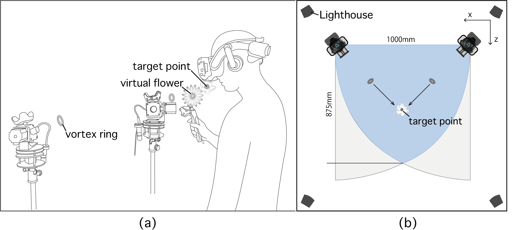
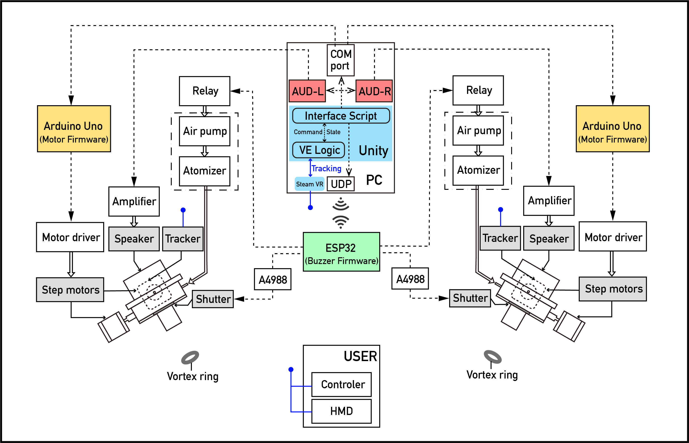

aBio: Active Bi-Olfactory Display using Subwoofers for Virtual Reality
Including olfactory cues in virtual reality (VR) would enhance user immersion in the virtual environment, and precise control of smell would facilitate a more realistic experience for users.
aBio is an active bi-olfactory display system that delivers scents precisely to specific locations rather than diffusing scented air into the atmosphere. aBio provides users with a natural olfactory experience in free air by colliding two vortex rings launched from dual speaker-based vortex generators, which also has the effect of cushioning the force of air impact. According to the various requests of different applications, the collision point of the vortex rings can be positioned anywhere in front of the user’s nose.

(a) System concept (b) System top view
The system consists of two olfactory display units. Each olfactory display unit launches the vortex ring at the target point. The local high-speed airflow that forms the vortex ring is interrupted when two vortex rings collide with each other, creating an odor filed. The 2-DOF platform controls the rotation of the vortex generator, which allows the vortex ring to be directed to a specific target point in a certain range of 3D space.

Overview of the architecture of aBio System
Through precise vortex control and Vive’s tracking technology, aBio can synchronize the presentation of scents with the interactive plot of the moving user in VR, such as when the user picks up a virtual flower, the fragrance of flowers is presented around the user’s nose. This approach helps aBio to significantly improve its spatial control of the smell and enables the user to experience interactive olfactory sensations without wearing additional olfactory devices.
Publications:
Hu, Y. Y., Jan, Y. F., Tseng, K. W., Tsai, Y. S., Sung, H. M., Lin, J. Y., & Hung, Y. P.
aBio: Active Bi-Olfactory Display Using Subwoofers for Virtual Reality.
In Proceedings of the 29th ACM International Conference on Multimedia (pp. 2065-2073). *Best Student Paper Award
Hu, Y. Y., Jan, Y. F., Tseng, K. W., Tsai, Y. S., Sung, H. M., Lin, J. Y., & Hung, Y. P.
Research and Development of an Active BiOlfactory Display and Its Integration with Virtual Reality.
Leonardo Abstracts Service LABS ID: 4286